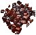
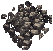
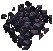
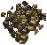
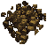
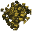
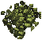
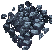

| ランク | 1 | 2 | 3 | 4 | 5 |
| 名称 | Iron | Dullcopper | Shadow | Copper | Bronze |
| 鉱石画像 |  |  |  |  |  |
| 採掘必要スキル | 0.0 | 65.0 | 70.0 | 75.0 | 80.0 |
| ランク | 6 | 7 | 8 | 9 |
| 名称 | Gold | Agapite | Verite | Valorite |
| 鉱石画像 |  |  |  | |
| 採掘必要スキル | 85.0 | 90.0 | 95.0 | 99.0 |
| 採掘回数 | 鉱石Elemental 出現回数 |
出現率（％） |
| 5000 | 98 | 1.9％ |
| エレメンタル | 特殊効果などの特徴 |
| Shadow iron | 地震（Earth quake）以外の魔法攻撃無効、ペット攻撃無効 |
| Copper | Auto Dispel、全攻撃50％反射 |
| Bronze | Auto Dispel、蒸気攻撃 |
| Golden | Auto Dispel |
| Agapite | Auto Dispel、高攻撃力 |
| Verite | Auto Dispel、耐久値減少攻撃（防具耐久値強制減少） |
| Valorite | Auto Dispel、耐久値減少攻撃、全攻撃50％反射 蒸気攻撃、高攻撃力、ペット攻撃無効 地震以外の魔法攻撃無効 |
| 種族 | 採掘回数 | 特殊宝石 入手回数 |
入手率 |
| 人間 | 20000 | 102 | 0.51％ |
| エルフ | 100000 | 745 | 0.75％ |
| 画像 | 宝石の種類 | 入手回数 |
| Blue Diamond | 219 | |
| Dark Sapphire | 204 | |
| Ecru Citrine | 228 | |
| Fire Ruby | 209 | |
| Perfect Emerald | 248 | |
| Turquoise | 228 | |
| 合計1336個、採掘回数180000回（エルフ） | ||
| 名前 | 採掘回数 | 入手回数 |
| sand[砂] | 800 | 78 |
| granite [花崗岩] |
5000 | 488 |
| 種族 | 採掘場所 | 採掘回数 | 一般宝石 入手回数 |
| ガーゴイル | フェルッカ | 1000 | 82 |
| ガーゴイル | マラス（Trammel） | 1000 | 71 |
| ガーゴイル | テルマー（Trammel） | 1000 | 123 |
| エルフ | マラス（Trammel） | 1000 | 91 |
| エルフ | テルマー（Trammel） | 1000 | 130 |
| 採掘回数 | 入手回数 |
| 5000 | 8 |
| 鉱石エレメンタル | 倒した回数 | 入手回数 |
| shadowiron | 207 | 33 |
| copper | 40 | 9 |
| bronze | 50 | 12 |
| gold | 62 | 17 |
| agapite | 41 | 8 |
| verite | 43 | 25 |
| valorite | 45 | 21 |